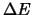

The proof follows [78], with perhaps, some pedagogical elaborations.
Notation:
 .
Note, this will cover all sites
.
Note, this will cover all sites
 . Note, there will be cliques which will
contain the pixel , and it is the contribution from
this pixel which is summed out.
. Note, there will be cliques which will
contain the pixel , and it is the contribution from
this pixel which is summed out.
if part:
 is Gibbs distributed Gibbs distribution as defined in
the theorem then
is Gibbs distributed Gibbs distribution as defined in
the theorem then  is a MRF.
is a MRF.
Consider,
Next, through similar manipulations, we show that equals (B.8).
Canceling similar terms from the numerator and denominator, and comparing with (B.8) we see that
Note that
as long
as
; and will not be infinity because
takes countable finite values.
Thus we have shown that  is a MRF with .
is a MRF with .
only if part: MRF Gibbs distribution
with the general form for  as specified in the theorem.
as specified in the theorem.
The proof is in two parts:
(a) First we need to show that there exist
a  such that the probability distribution of
such that the probability distribution of  can be
expressed as
.
can be
expressed as
.
(b) Next we need to consider the general form for  , and
establish that the MRF condition implies that
, and
establish that the MRF condition implies that
 will be zero, if its argument do not belong to the same clique.
This will
then establish that
will be zero, if its argument do not belong to the same clique.
This will
then establish that  can be expressed as
.
can be expressed as
.
(a) Since
, we define  as
as
(b) In order to prove that
 becomes zero if its argument do not
belong the same clique, consider the following:
becomes zero if its argument do not
belong the same clique, consider the following:
Let be the state defined by
Let be a realization of . Now consider
consequently
| (46) |
Now, by the Markovian assumption, the right hand side depends upon and the neighborhood of , namely,
Using the general form for  and
(Reed-Muller
expansion) we need to show that
and
(Reed-Muller
expansion) we need to show that
 will be
zero if it does not have all its arguments
as neighbors of one another. Rewriting (B.4),
will be
zero if it does not have all its arguments
as neighbors of one another. Rewriting (B.4),
Without loss of generality we can consider . Then in :
Based on the above observations we have
Now suppose site is not a neighbor of . Then by
(B.11), the right hand side of
(B.12)
must be independent of . This can be used to show that all
 which involve and will be zero.
This, in turn, can be achieved by proper selection of
which involve and will be zero.
This, in turn, can be achieved by proper selection of  .
.
Choose  such that
such that
then
By considering all sites which are not neighbors of we will then obtain
Continuing in this fashion we can show that all
 whose arguments
are not neighbors, or equivalently whose arguments do not belong to a
clique, have to be zero. Consequently, we can express
whose arguments
are not neighbors, or equivalently whose arguments do not belong to a
clique, have to be zero. Consequently, we can express  as
as
where will be determined by non-zero
 (or
(or
 whose arguments form a clique).
whose arguments form a clique).
This completes the proof of the Hammersley-Clifford Theorem.
Simulated Annealing Algorithm -- Selecting  in practise
in practise
SAA algorithm, simulated annealing is effective if the
temperature is chosen correctly.
It is well known that the temperature should be high initially and should
reduce slowly with time (iterations) using some cooling schedule.
The
reason being that a large value of  returns a value close to for
which in turn means that it is more likely that a new configuration will be
accepted even though the energy contributed by this new configuration is high
(remember we are looking for a smaller energy configuration).
But with iterations
returns a value close to for
which in turn means that it is more likely that a new configuration will be
accepted even though the energy contributed by this new configuration is high
(remember we are looking for a smaller energy configuration).
But with iterations
 decreases and the value of
tends to ,
making
it conceptually a gradient decent situation - accepting only configuration which
have lesser energy. Suppose we have a known cooling schedule and what we are
required to do is choose a starting
decreases and the value of
tends to ,
making
it conceptually a gradient decent situation - accepting only configuration which
have lesser energy. Suppose we have a known cooling schedule and what we are
required to do is choose a starting  so that the algorithm is capable of
reaching every solution - now what does this depend on? A look at the
literature gives no information on the choice instead the choice are ad hoc or
based on trial and error and
it is not uncommon to find -- we chose the starting
temperature as xyz.
so that the algorithm is capable of
reaching every solution - now what does this depend on? A look at the
literature gives no information on the choice instead the choice are ad hoc or
based on trial and error and
it is not uncommon to find -- we chose the starting
temperature as xyz.
It can be seen that the
temperature choice
depends on  which is dependent on the difference in the
() energy between the old configuration and new
configuration.
Clearly is application dependent and hence the choice of  .
.
Now, let us look at a case where is say of the
order , then we know from the above discussion
that we should choose  to start at say .
But now the
to start at say .
But now the  should be reduced from (using some cooling
schedule)
such that the
value becomes small; meaning less
probability of a high energy state being accepted.
Suppose we agree that
is good enough probability of the high energy states not being accepted
then it is easy to see that we would have to reduce
should be reduced from (using some cooling
schedule)
such that the
value becomes small; meaning less
probability of a high energy state being accepted.
Suppose we agree that
is good enough probability of the high energy states not being accepted
then it is easy to see that we would have to reduce
 to -- this implies that a log cooling
schedule would need iterations (to reduce the
to -- this implies that a log cooling
schedule would need iterations (to reduce the  from to )
where is given by
from to )
where is given by
| (51) |